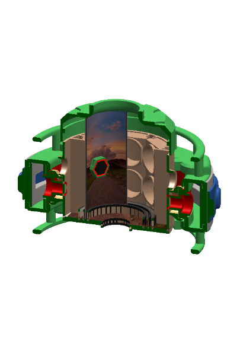

1 — Projected interface
Hands-free control via a projected UI to reduce hardware clutter.

Minimal controls. Designed for speed.
A multisensory VR dining environment concept for the ISS galley — designed to reduce homesickness and create a grounded, Earth-like moment during daily meals.

Long-duration missions can weaken emotional connection to home. Earthlight is a VR room concept placed in the galley to turn meals into a reliable “anchor” — using controlled visual, sound, scent, and climate cues while staying safe and low-effort to use.
The experience is built as a layered system — each layer adds realism, but can be scaled down depending on constraints.
Three access modes — designed for fast use in a constrained, shared environment.
Hands-free control via a projected UI to reduce hardware clutter.
Minimal controls. Designed for speed.
Fast commands for lighting, sound, climate, safety checks, and diagnostics.

“Invisible” interaction, no extra steps.
Wearable-based trigger for quick scene changes and wellbeing-linked sessions.

A single gesture or tap to enter the mode.
Designed around stability and containment during meals in microgravity.

Built for routine, not novelty.
Add your PDF or supporting material here (optional).